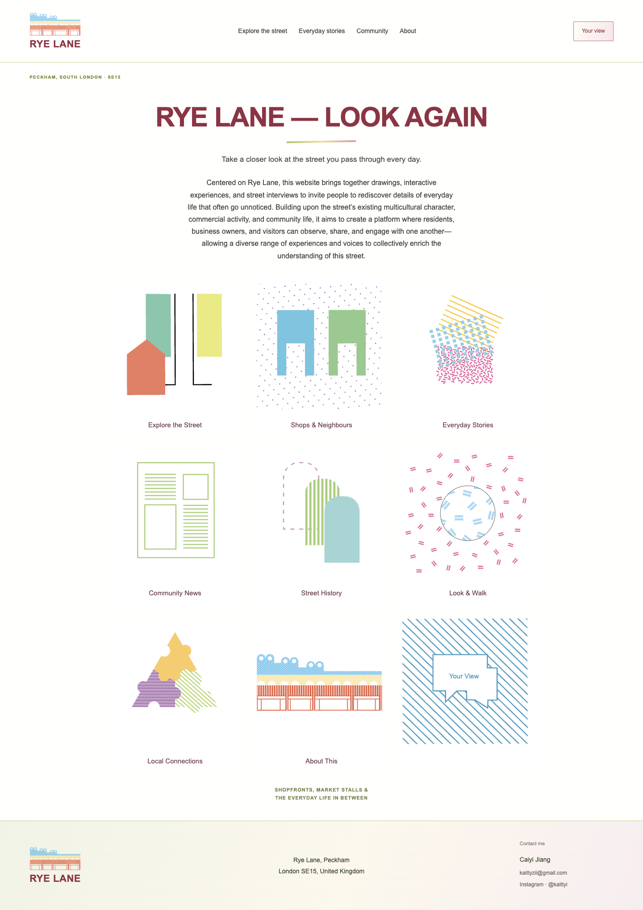
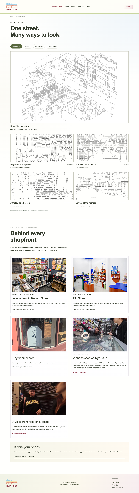
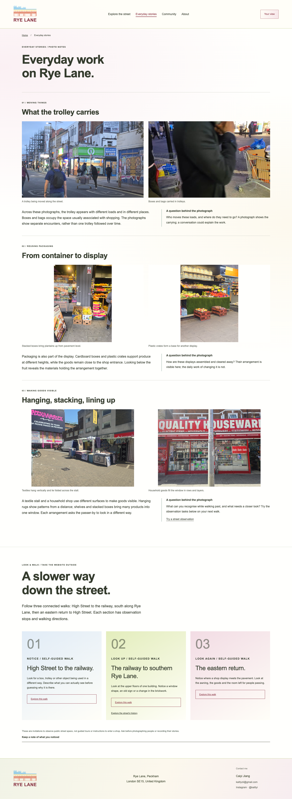
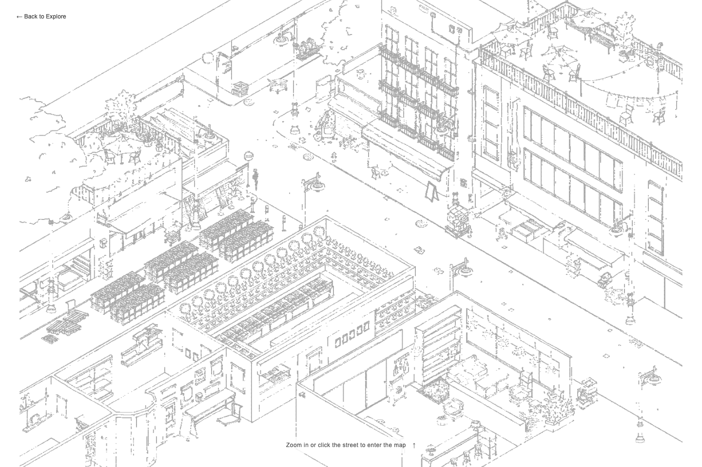
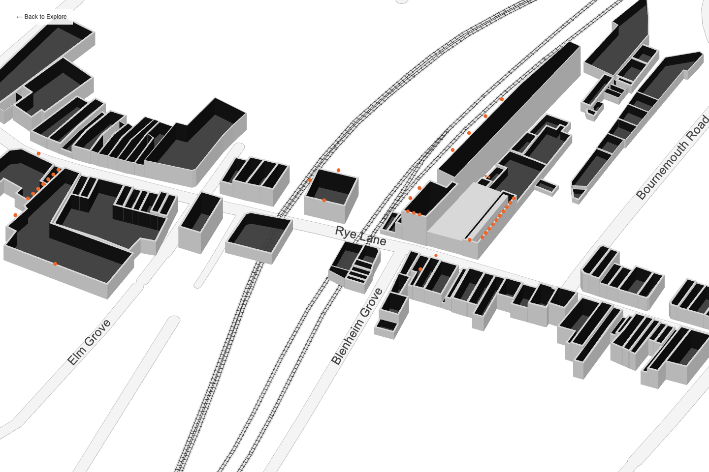

01 / Home — different ways into Rye Lane
The illustrated homepage brings the main routes together. Visitors can begin with street drawings, shops, everyday stories or local information, rather than following one fixed sequence.


WEBSITES AS RESEARCH AND CONVERSATION TOOLS
I used the websites to explore how drawings, photographs and interviews could be connected without reducing Rye Lane to a single street image. A drawing could direct attention to an entrance or display, but it could not explain the work or relationships behind it. The question became how a viewer might move between these different kinds of material, and how the work could become something to discuss with the people represented.
The drawing-led research website began with the street image. Zooming and moving across it allowed details to be approached within a wider scene; photographs and research writing offered other ways to examine what had been selected. This translated the movement between overview and detail in my drawing process into an interactive format.
It also raised a limitation: giving viewers freedom to explore does not ensure that they understand why a particular detail matters. The drawing remained my interpretation. The interface could make it accessible, but could not by itself supply the experiences missing from the image or demonstrate how an unfamiliar viewer understood it.
In Rye Lane — Look Again, I tried organising material around shops, stories and walking as well as drawings. This offered a way to enter through a particular person or everyday activity, rather than beginning with the research paper. The change was an experiment in how to connect the visual research with accounts of using the street.
Working across the two forms made an editorial question clearer: which material helps explain a spatial relationship, and which simply adds more information? Adding sections does not necessarily deepen understanding. The relationship between an image, an account and its setting needs to remain clear. I have not yet established through a wider audience walkthrough whether these routes achieve that aim.
The homepage offers five main navigation routes, with additional shortcuts to Shops & Neighbours, Look & Walk, Street History and Local Connections. Explore the Street moves from drawings to shopkeepers’ accounts; Everyday Stories connects photographic observations with walks. Community provides local context, About This explains the project, and Your View offers a place to keep a personal response. These branches include both separate pages and sections within them: Shops & Neighbours sits within Explore the Street; Look & Walk within Everyday Stories; and Local Connections and Street History within Community. Shop profiles and City Walks open as separate pages. Visitors can move between these routes rather than follow a fixed sequence. Notes in Your View stay on the visitor’s device; they are not submitted to the project.
The illustrated homepage brings the main routes together. Visitors can begin with street drawings, shops, everyday stories or local information, rather than following one fixed sequence.

The current local page adds “Step into Rye Lane”, an interactive map entrance, alongside four hand-drawn scenes. The shop introductions below connect these visual observations with photographs and recorded conversations, including the café, phone shop and a business in Holdrons Arcade.

Three photographic stories focus on carrying, reusing packaging and arranging goods. Questions alongside the photographs lead into walking prompts, connecting what is shown on screen with further observation on the street.

The latest local version adds “Step into Rye Lane” to Explore the Street. A street drawing acts as the entrance: clicking the street or zooming in leads to a three-dimensional model. Visitors can pan and zoom across the model and select buildings to read available shop information.


This adds a spatial route through the material: a visitor can move from the wider street to a particular building, while the drawings and interviews offer more detailed observations and accounts. The Drawing chapter records the model-making process, including the initial open-wall model and later height revisions.
Explore the interactive map ↗ · Open Explore the Street ↗
This remains a developing interpretation of the street. Mapped building envelopes and shop listings do not describe every interior or verify every current use. A wider audience walkthrough is still needed to understand whether the transition from drawing to model helps people connect the spatial view with everyday stories.
The record-shop conversation suggested a more specific direction for the content. The owner proposed a photograph, the shop’s name and address, and a video of himself introducing it. This gave me an example of what a contributor wanted others to encounter, rather than relying only on my selection of street details. I used these suggestions to develop the shop profile, then returned to show it to the owner. His response and the resulting change to the shop’s website link are documented in 07 / Return visit.